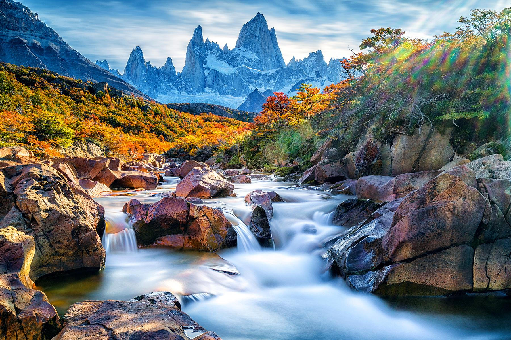

Explore Argentina

Argentina, country of South America, covering most of the southern portion of the continent. The world’s eighth largest country, Argentina occupies an area more extensive than Mexico and the U.S. state of Texas combined. It encompasses immense plains, deserts, tundra, and forests, as well as tall mountains, rivers, and thousands of miles of ocean shoreline.
San Ignacio Mini
San Ignacio Mini in Argentina is a UNESCO World Heritage site. Originally founded in approximately 1611, it formed part of a series of Jesuit Missions of the Guaranis established by the Society of Jesus or ‘Jesuits’. Many similar Jesuit missions were scattered across Argentina, Brazil and Paraguay. A thriving settlement in the early 18th century, in 1767 the Jesuits were forced out after a campaign to suppress the Society of Jesus initiated by Pope Clement XIV. The mission itself was destroyed a year later. Today, the ruins are some of the most well-preserved of the Jesuit Missions in South America and a popular tourist destination. They include a magnificent entrance, a church, a cemetery, a school, a large central square and approximately thirty houses of its original residents as well as several other original buildings.
La Recoleta Cemetery
Franciscan monks first arrived in this area, then on the outskirts of Buenos Aires, in the early 18th century, and a cemetery was building around their convent and church. The order was disbanded in 1822, but the cemetery was converted into Buenos Aires’ first public cemetery. The layout seen today was designed by a French engineer called Próspero Catelin in 1822, and resembles a city more than a burial ground with its impressive neo-classical gates opening up to winding tree-lined streets. The site extends over 14 acres today, and contains 4691 vaults, all of which are above ground. 94 of these have been declared National Historic Monuments – they vary in architectural style from Baroque and Neo-Gothic to Art Deco and Art Nouveau, depending on when they were built. Opulent and grand, La Recoleta Cemetery is characterized by a range of ornately decorated mausoleums, many of which are made of marble and adorned with statues. In fact, this over ground burial system is due to the fact that is anything buried underneath La Recoleta Cemetery’s marshy earth is likely to rise back to the surface. La Recoleta Cemetery sees presidents and wealthy businessmen rub shoulders with poets, writers and boxers. Look out for presidents such as Raul Alfonsin, Arturo Umberto Illia, Hipólito Yrigoyen and Nicolás Avellaneda, one of Napoleon’s grandchildren Isabel Walewski Colonna and the boxer, Luis Ángel Firpo. It’s most famous resident is Eva Perón or “Evita”, who is buried in a black marble mausoleum owned by her family and listed under her maiden name “Maria Eva Duarte”.
Transport
Bus: Buses are the main form of public transport in Argentina and the system is excellent. Urban buses are known as colectivos and cover an extensive route around major cities. The reliability of buses can vary according to area and time of day. Buses are run by a number of different companies, so fares can vary. Argentina has a system of long distance busses as well. This is the primary mode of transport used to travel across the country. Some of these busses have interiors similar to that of airline's business class cabin and even offer on board dining.
Trains: Argentina;s primary train network is a suburban train line that connects Buenos Aires with outlying areas. This is the main form of transport for commuters who work in the capital.Resistencia, the capital of chaco Province, also has a suburban train line.These days its cheaper tto travel long distance in Argentina with train rather than bus, but train travel in argentina also takes more time
Underground Rail: The six lines of the Buenos Aires subway can easily be navigated by checking the map which is available online.Paper tickets are no longer available, and expats will have to purchase a Subte smart card in one of the city's tourist centres or a kiosk. Buenos Aires is the only city in Argentina with an underground train network, but plans are in place to build one in Cordoba.
Weather
The climate in Argentina is very varied. Buenos Aires and the Pampas have a temperate climate which means it' can be pretty cold in winter, but hot and humid in summer. In the deserts of Cuyo it can be extremely hot and dry in summer and temperatures can reach to a staggering 50 degrees Celsius (122° Fahrenheit). During winter it is moderately cold and dry.The Andes and Patagonia are cool in summer and very cold in winter, varying according to altitude. Extreme temperature shifts within a single day are common here. Take note that seasons in Argentina are reversed from those in the Northern Hemisphere. This means summer takes place from December til February.
Languages
While Argentina’s official language is Spanish, Argentina has enjoyed so much international migration that Arabic, Italian, German, English, and French are also spoken—at least in pockets throughout the country. There are also over one million speakers of various tribal languages, including Quecha and Guaraní. If you’re planning a visit to Argentina, Spanish will definitely be the most useful language with which to be at least somewhat comfortable and proficient. Especially in the bigger cities, you can always lean on useful Spanish words and phrases to handle your day-to-day activities.